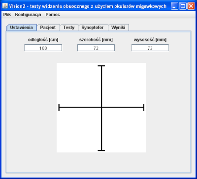

Zakładka "Ustawienia" (rys. 1) służy do wprowadzenia danych o warunkach przeprowadzania testów. Informacje te są wykorzystywane w procesie obliczania wyników testów. Należy je podawać po każdym uruchomieniu programu, gdyż nie są w żaden sposób zapamiętywane.
Większość zakładki zajmuje obrazek krzyża, którego wysokość i szerokość w milimetrach należy wpisać odpowiednio w pola opisane "wysokość [mm]" i "szerokość [mm]". W pole "odległość [cm]" należy wpisać wyrażoną w centymetrach odległość od monitora do oczu pacjenta.
